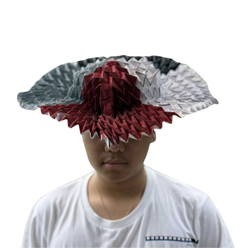
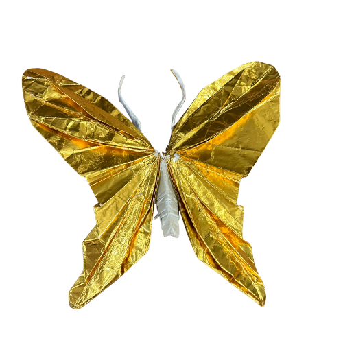

Who am I?
I am Nuntius Diego F. Galang, an aspiring Origamist. I started Origami when I learned about it from a taxi driver in Japan, and I am now taking my first steps into Complex Origami. Below are some of my Creations.
Origami Collapsible Hat
This is a four colored hat with interlocking folds to allow it to collapse into a smaller size.
Buttefly
Made from Gold Foil paper, this Buttefly has 6 legs and 2 antennae to go with it's two beautiful wings.
